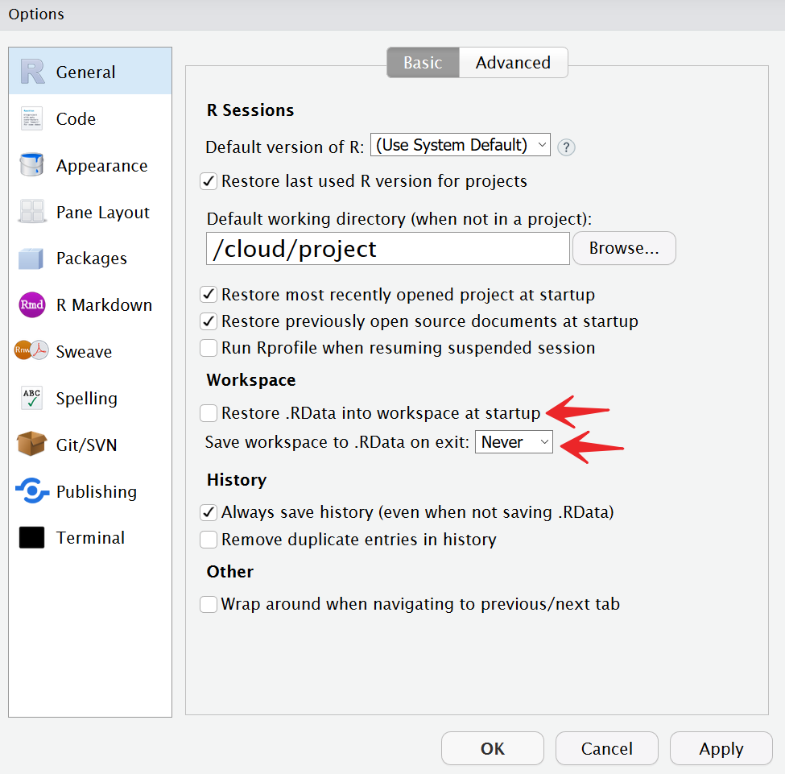

Last updated: 2020-06-29
Checks: 2 0
Knit directory: workflowr-useR2020/
This reproducible R Markdown analysis was created with workflowr (version 1.6.2.9000). The Checks tab describes the reproducibility checks that were applied when the results were created. The Past versions tab lists the development history.
Great! Since the R Markdown file has been committed to the Git repository, you know the exact version of the code that produced these results.
Great! You are using Git for version control. Tracking code development and connecting the code version to the results is critical for reproducibility.
The results in this page were generated with repository version 5cef3eb. See the Past versions tab to see a history of the changes made to the R Markdown and HTML files.
Note that you need to be careful to ensure that all relevant files for the analysis have been committed to Git prior to generating the results (you can use wflow_publish or wflow_git_commit). workflowr only checks the R Markdown file, but you know if there are other scripts or data files that it depends on. Below is the status of the Git repository when the results were generated:
Ignored files:
Ignored: .Rhistory
Ignored: .Rproj.user/
Note that any generated files, e.g. HTML, png, CSS, etc., are not included in this status report because it is ok for generated content to have uncommitted changes.
These are the previous versions of the repository in which changes were made to the R Markdown (analysis/challenge.Rmd) and HTML (docs/challenge.html) files. If you’ve configured a remote Git repository (see ?wflow_git_remote), click on the hyperlinks in the table below to view the files as they were in that past version.
| File | Version | Author | Date | Message |
|---|---|---|---|---|
| Rmd | b6df9b5 | John Blischak | 2020-06-24 | Add demo of running all chunks in a saved workspace. |
| html | 759ea05 | John Blischak | 2020-06-12 | Build site. |
| Rmd | ecbe1e6 | John Blischak | 2020-06-11 | Add the challenge instructions |
For the reproducibility challenge, you will attempt to re-run an analysis of Spotify song genres that was inspired by the blog post Understanding + classifying genres using Spotify audio features by Kaylin Pavlik (@kaylinquest).
NEW: Understanding song genres using Spotify audio features and decision trees in #rstats. Basically:
— Kaylin Pavlik (@kaylinquest) January 3, 2020
rap: speechy 🗣️
rock: can’t dance to it 🤟
EDM: high tempo ⏩
R&B: long songs ⏱️
latin: very danceable 💃
pop: everything else.https://t.co/q57ZDdROf7 pic.twitter.com/sfxRPKvpp2
The code includes a minimal machine learning style analysis with the following steps:
The analysis purposefully contains various issues that make it difficult to reproduce. Open the file spotify.Rmd by clicking on it in the RStudio Files pane. In the Editor pane, click on “Run” and then click on “Run All” to execute all the code chunks in the R console (Ctrl/Cmd+Alt+Enter). Note that the code completes and produces a plot in the Plots pane.
Next click the Knit button to re-build the document. This time the code fails due to an error. The difference is because RStudio knits Rmd files in a clean R session. In contrast, the R session currently running in the R console already had all the analysis variables created because the workspace was restored. This is why you want to avoid saving your workspace: it can make it appear that your code is running when it is actually contains errors. In fact, if you scroll back up through the R console history, you’ll see that some errors did occur. But the analysis still completed since the intermediate objects were already available.
To fix the workspace issue, first go to the Files pane and delete the file .RData that contains the saved workspace. Second, go to “Tools” -> “Global Options…”. Unclick the checkbox “Restore .RData into workspace at startup” and change the dropdown “Save workspace to to .RData on exit” to Never.

Now you can proceed to fix the analysis one error at a time. Click on Knit to produce the first error. Then click on “Output” to see the lines in the Rmd file where the error occurred.
The first error you will encounter is below:
Quitting from lines 16-21 (spotify.Rmd)
Error in file(file, "rt") : cannot open the connection
Calls: <Anonymous> ... withVisible -> eval -> eval -> read.csv -> read.table -> file
Execution haltedThe function read.csv() is unable to open the data file. What’s wrong with the path to the file? Apply what you know about absolute and relative paths to update the path and re-run the analysis.
The next error you encounter is:
Quitting from lines 27-30 (spotify.Rmd)
Error in sample.int(length(x), size, replace, prob) :
object 'numTrainingSamples' not found
Calls: <Anonymous> ... withVisible -> eval -> eval -> sample -> sample.int
Execution haltedIt looks like the variable numTrainingSamples isn’t defined in the Rmd file. This error often occurs when a variable is interactively created in the R console, but you forget to define it in the script.
Based on the description above the code chunk, can you define the variable numTrainingSamples? Hint: You can obtain the number of samples with nrow(spotify).
The next error you encounter is:
Quitting from lines 36-39 (spotify.Rmd)
Error in rpart(genre ~ ., data = spotifyTraining) :
could not find function "rpart"
Calls: <Anonymous> ... handle -> withCallingHandlers -> withVisible -> eval -> eval
Execution haltedThe function rpart() can’t be found. This can occur when you load a package in the current R session, but forget to put the call to library() in the script.
Based on the text above the code chunk, can you figure out which package needs to be loaded?
The next error you encounter is:
Quitting from lines 61-66 (spotify.Rmd)
Error in mean(spotifyTesting[, 1] == predict_random) :
object 'predict_random' not found
Calls: <Anonymous> ... withCallingHandlers -> withVisible -> eval -> eval -> mean
Execution haltedR can’t find the variable named predict_random. Look at the surrounding code: what do you think the name of this variable should be?
Renaming variables during an analysis can lead to these subtle errors. Since both the original and updated versions of the variable are defined in the current R session, the code will continue to run. But when you or someone else tries to run the code in a clean R session, the code will unexpectedly fail.
Success! The analysis now runs. Compare your prediction results to that of your partners’ and/or re-run the analysis again. Are the results always identical? Why not? What could you do if you wanted to publish these results and allow others to exactly reproduce your findings?